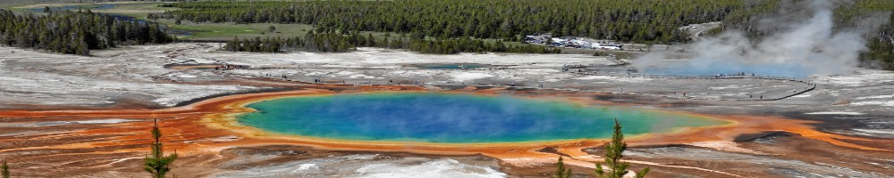
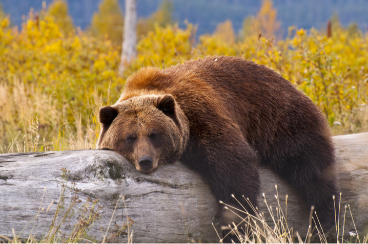

Yellowstone is a national park located mostly in Wyoming with sections in Montana and Idaho
the park was established through the signing of the Yellowstone National Park Protection act
on March 1st 1872 by Ulysses S. Grant. Yellowstone was the first National Park in the US and
the world. It features many different kinds of wildlife and geothermal features like gysers.

Above we see a photo of one of Yellowstones famous bears, this is just one example of the
many different kinds of wildlife that can be found in the park. Each one unique and important.
© Jacob Jensen
Here is a great place to study Utah State